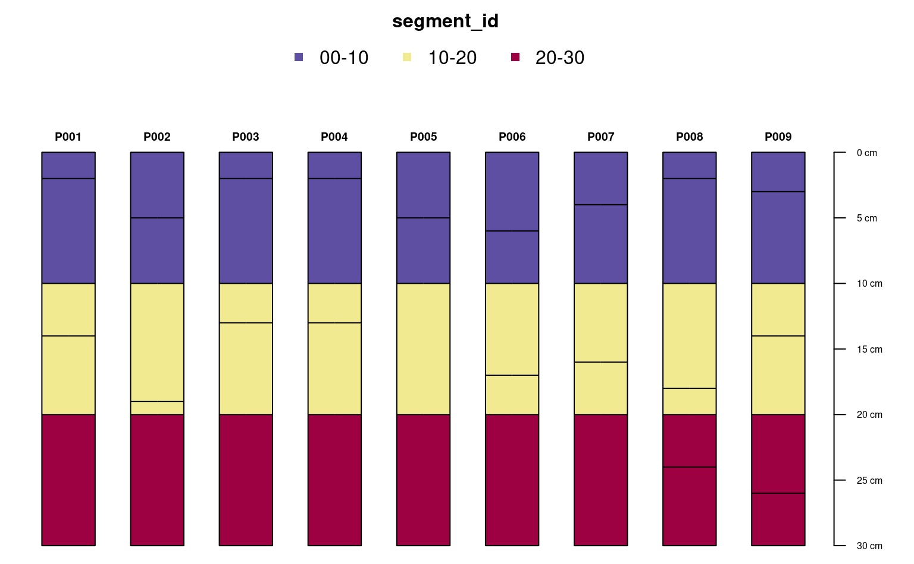

This function segments or subdivides horizon data from a SoilProfileCollection or data.frame by depth interval (e.g. c(0, 10), c(0, 50), or 25:100). This results in horizon records being split at the specified depth intervals, which duplicates the original horizon data but also adds new horizon depths. In addition, labels (i.e. "segment_id") are added to each horizon record that correspond with their depth interval (e.g. 025-100). This function is intended to harmonize horizons to a common support (i.e. depth interval) for further aggregation or summary. See the examples.
segment(object, intervals, trim = TRUE, hzdepcols = NULL)either a SoilProfileCollection or data.frame
a vector of integers over which to slice the horizon data (e.g. c(25, 100) or 25:100)
logical, when TRUE horizons in object are truncated to the min/max specified in intervals. When FALSE, those horizons overlapping an interval are marked as such. Care should be taken when specifying more than one depth interval and trim = FALSE.
a character vector of length 2 specifying the names of the horizon depths (e.g. c("hzdept", "hzdepb")), only necessary if object is a data.frame.
Either a SoilProfileCollection or data.frame with the original horizon data segmented by depth intervals. There are usually more records in the resulting object, one for each time a segment interval partially overlaps with a horizon. A new column called segment_id identifying the depth interval is added.
segment() performs no aggregation or resampling of the source data, rather, labels are added to horizon records for subsequent aggregation or summary. This makes it possible to process a very large number of records outside of the constraints associated with e.g. slice() or slab().
# example data
data(sp1)
# upgrade to SPC
depths(sp1) <- id ~ top + bottom
# segment and trim
z <- segment(sp1, intervals = c(0, 10, 20, 30), trim = TRUE)
# display segment labels
# note that there are new horizon boundaries at segments
par(mar = c(0, 0, 3, 1))
plotSPC(z, color = 'segment_id', width = 0.3)

# highlight new horizon records
par(mar = c(0, 0, 2, 1))
plotSPC(z, color = NA, default.color = NA, width = 0.3, lwd = 1)
plotSPC(sp1, color = NA, default.color = NA,
width = 0.3, lwd = 3, add = TRUE, name = NA, print.id = FALSE)
#> [P001:6] horizon with top == bottom, cannot fix horizon depth overlap
#> consider using repairMissingHzDepths()
legend('top', horiz = TRUE,
legend = c('original', 'segmented'),
lwd = c(1, 3), cex = 0.85, bty = 'n')
# \donttest{
# same results as slab()
# 10 random profiles
s <- lapply(1:10, random_profile, n_prop = 1, SPC = TRUE, method = 'random_walk')
s <- combine(s)
a.slab <- slab(s, fm = ~ p1, slab.structure = c(0, 10, 20, 30), slab.fun = mean, na.rm = TRUE)
z <- segment(s, intervals = c(0, 10, 20, 30), trim = TRUE)
z <- horizons(z)
z$thick <- z$bottom - z$top
a.segment <- sapply(split(z, z$segment_id), function(i) {
weighted.mean(i$p1, i$thick)
})
res <- data.frame(
slab = a.slab$value,
segment = a.segment,
diff = a.slab$value - a.segment
)
print(res)
#> slab segment diff
#> 00-10 2.3840217 2.3840217 0.000000e+00
#> 10-20 1.8184239 1.8184239 0.000000e+00
#> 20-30 0.5788936 0.5788936 2.220446e-16
res$diff < 0.001
#> [1] TRUE TRUE TRUE
# }
data(sp5)
# segment by upper 25-cm
test1 <- segment(sp5, intervals = c(0, 100))
print(test1)
#> SoilProfileCollection with 296 profiles and 1254 horizons
#> profile ID: soil | horizon ID: hzID
#> Depth range: 70 - 100 cm
#>
#> ----- Horizons (6 / 1254 rows | 10 / 20 columns) -----
#> soil hzID top bottom name sand silt clay R25 G25
#> soil1 1 0 8 H1 32.3 10.9 52.8 0.41 0.38
#> soil1 2 8 25 H2 29.0 11.2 58.2 0.31 0.28
#> soil1 3 25 55 H3 34.9 11.6 51.9 0.31 0.28
#> soil1 4 55 100 H4 38.2 10.9 49.7 0.31 0.28
#> soil10 5 0 10 H1 25.2 14.4 58.4 0.43 0.37
#> soil10 6 10 25 H2 24.4 14.9 59.0 0.44 0.37
#> [... more horizons ...]
#>
#> ----- Sites (6 / 296 rows | 1 / 1 columns) -----
#> soil
#> soil1
#> soil10
#> soil100
#> soil101
#> soil102
#> soil103
#> [... more sites ...]
#>
#> Spatial Data:
#> [EMPTY]
nrow(test1)
#> [1] 1254
print(object.size(test1), units = "Mb")
#> 0.3 Mb
# segment by 1-cm increments
test2 <- segment(sp5, intervals = 0:100)
print(test2)
#> SoilProfileCollection with 296 profiles and 29523 horizons
#> profile ID: soil | horizon ID: hzID
#> Depth range: 70 - 100 cm
#>
#> ----- Horizons (6 / 29523 rows | 10 / 20 columns) -----
#> soil hzID top bottom name sand silt clay R25 G25
#> soil1 1 0 1 H1 32.3 10.9 52.8 0.41 0.38
#> soil1 2 1 2 H1 32.3 10.9 52.8 0.41 0.38
#> soil1 3 2 3 H1 32.3 10.9 52.8 0.41 0.38
#> soil1 4 3 4 H1 32.3 10.9 52.8 0.41 0.38
#> soil1 5 4 5 H1 32.3 10.9 52.8 0.41 0.38
#> soil1 6 5 6 H1 32.3 10.9 52.8 0.41 0.38
#> [... more horizons ...]
#>
#> ----- Sites (6 / 296 rows | 1 / 1 columns) -----
#> soil
#> soil1
#> soil10
#> soil100
#> soil101
#> soil102
#> soil103
#> [... more sites ...]
#>
#> Spatial Data:
#> [EMPTY]
nrow(test2)
#> [1] 29523
print(object.size(test2), units = "Mb")
#> 6 Mb
# segment and aggregate
test3 <- segment(horizons(sp5),
intervals = c(0, 5, 15, 30, 60, 100, 200),
hzdepcols = c("top", "bottom")
)
test3$hzthk <- test3$bottom - test3$top
test3_agg <- by(test3, test3$segment_id, function(x) {
data.frame(
hzID = x$hzID[1],
segment_id = x$segment_id[1],
average = weighted.mean(x$clay, w = x$hzthk)
)
})
test3_agg <- do.call("rbind", test3_agg)
head(test3_agg)
#> hzID segment_id average
#> 000-005 1 000-005 40.31517
#> 005-015 1 005-015 41.89718
#> 015-030 2 015-030 43.88592
#> 030-060 3 030-060 46.01368
#> 060-100 4 060-100 47.65180
#> 100-200 5 100-200 48.13381